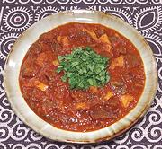

|
Ata DinDin StewAfrica - Nigeria - Ata DinDin | ||||
| Makes: Effort: Sched: DoAhead: |
2-1/4 # *** 40 min Yes |
This recipe features a very traditional mix of meats for amazing contrast of taste and texture - but Ata DinDin Sauce is totally flexible and can be used with just about anything (see Variations). | |||
|
1 8 4 4 5 1 1 1/2 ------- ar |
c oz oz oz oz T c t --- |
Ata DinDin (1) Beef (2) Tripe (3) Ponmo (4) Onion Oil Broth (5) Salt -- Serve with see Serving |
Weights for the Meats are After Cooking. Do Ahead
|